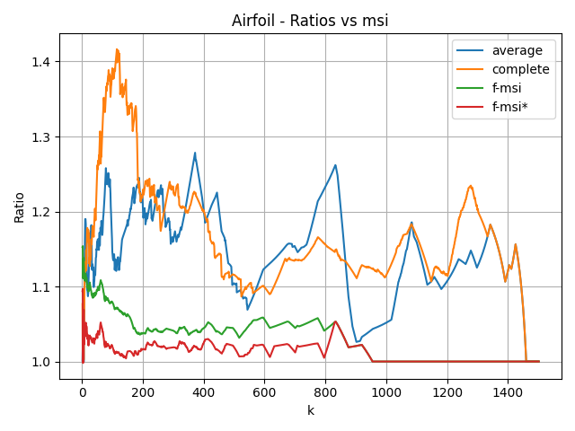
Ratio between the k-medians cost of each method and that of msi on the "Airfoil" dataset.
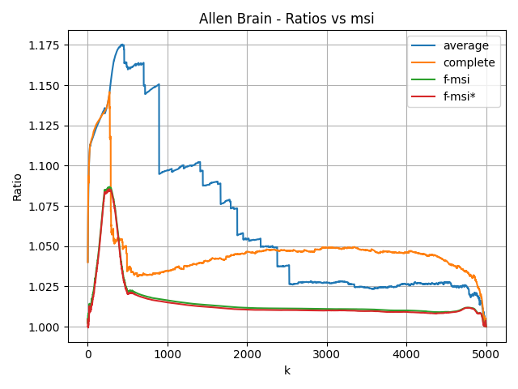
Ratio between the k-medians cost of each method and that of msi on the "Allen Brain" dataset.
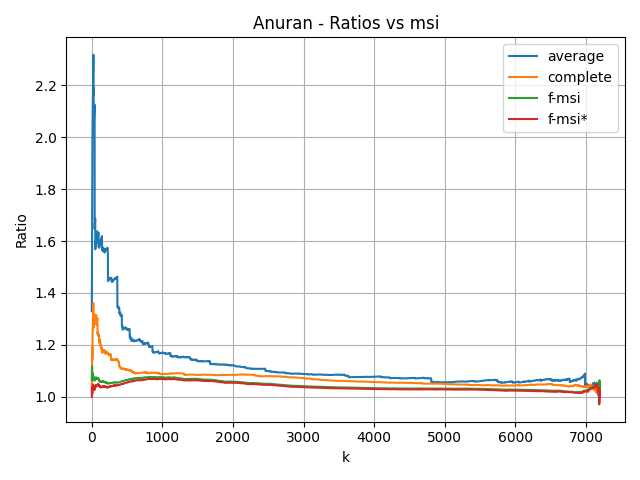
Ratio between the k-medians cost of each method and that of msi on the "Anuran" dataset.
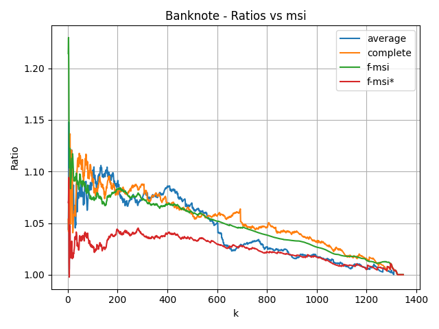
Ratio between the k-medians cost of each method and that of msi on the "Banknote" dataset.
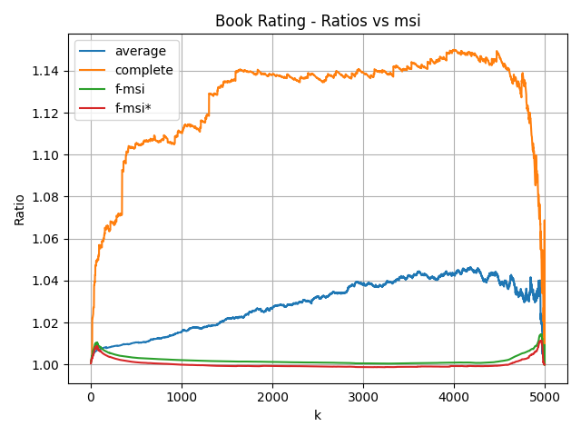
Ratio between the k-medians cost of each method and that of msi on the "Book Rating" dataset.
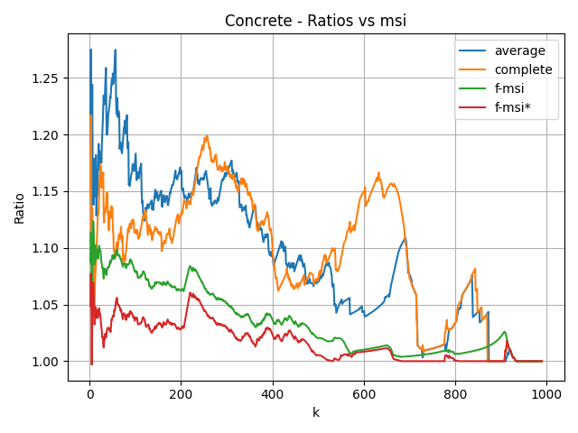
Ratio between the k-medians cost of each method and that of msi on the "Concrete" dataset.
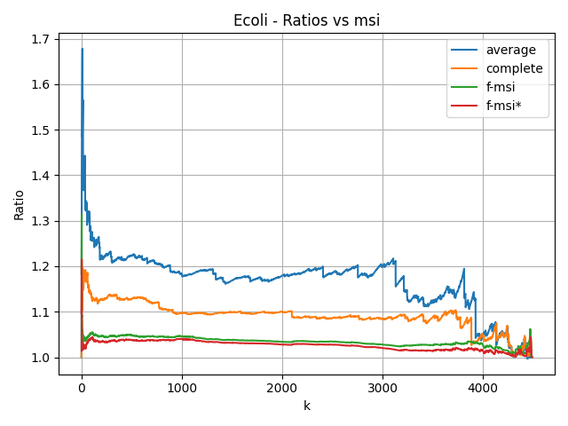
Ratio between the k-medians cost of each method and that of msi on the "Ecoli" dataset.
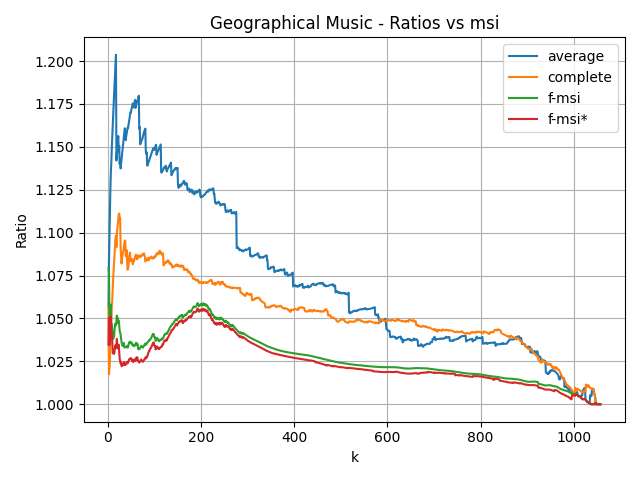
Ratio between the k-medians cost of each method and that of msi on the "Geographical Music" dataset.
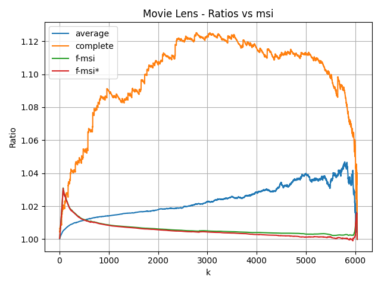
Ratio between the k-medians cost of each method and that of msi on the "Movie Lens" dataset.
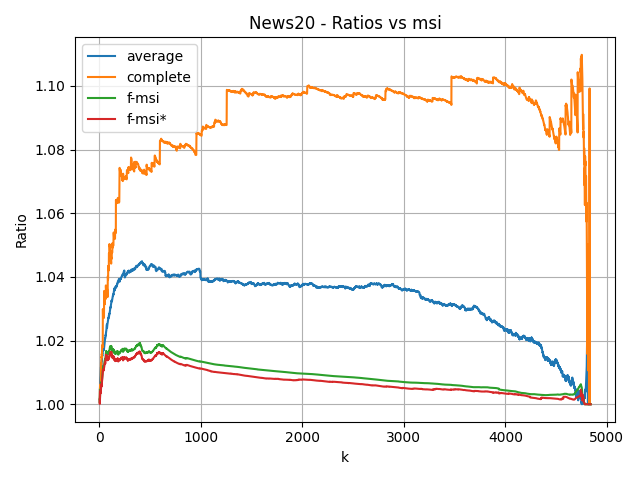
Ratio between the k-medians cost of each method and that of msi on the "News20" dataset.
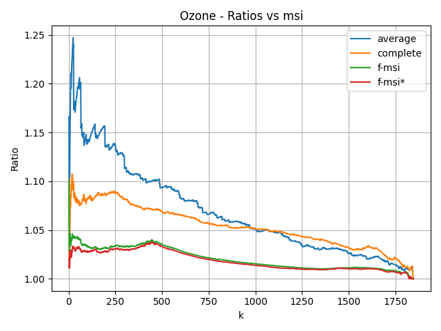
Ratio between the k-medians cost of each method and that of msi on the "Ozone" dataset.
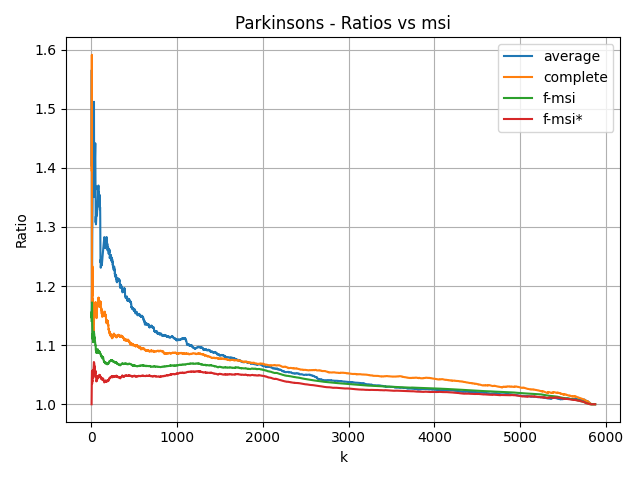
Ratio between the k-medians cost of each method and that of msi on the "Parkinsons" dataset.
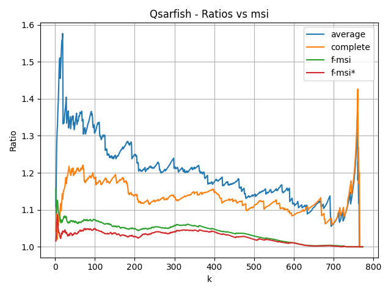
Ratio between the k-medians cost of each method and that of msi on the "Qsarfish" dataset.
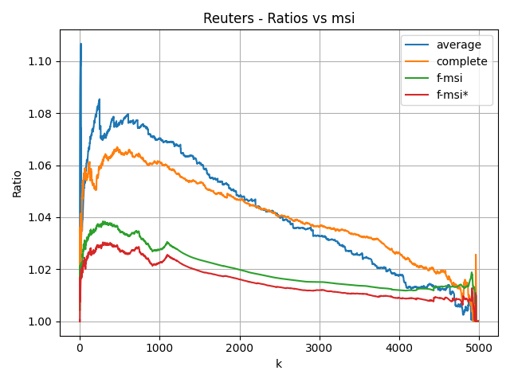
Ratio between the k-medians cost of each method and that of msi on the "Reuters" dataset.
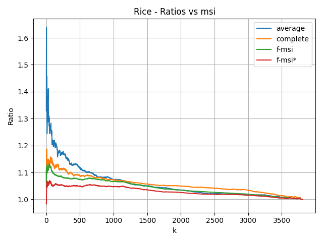
Ratio between the k-medians cost of each method and that of msi on the "Rice" dataset.
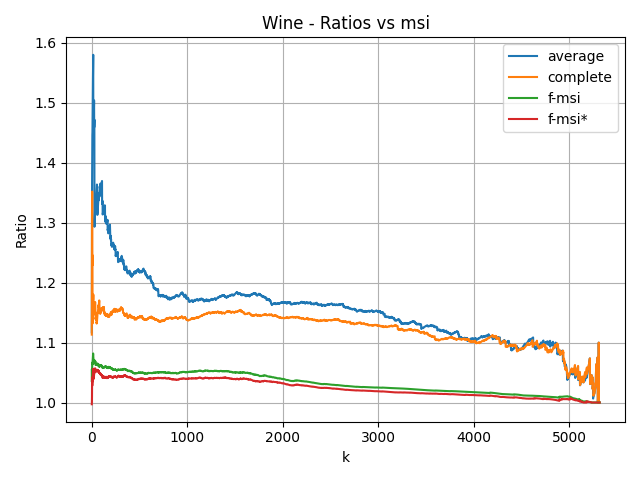
Ratio between the k-medians cost of each method and that of msi on the "Wine" dataset.